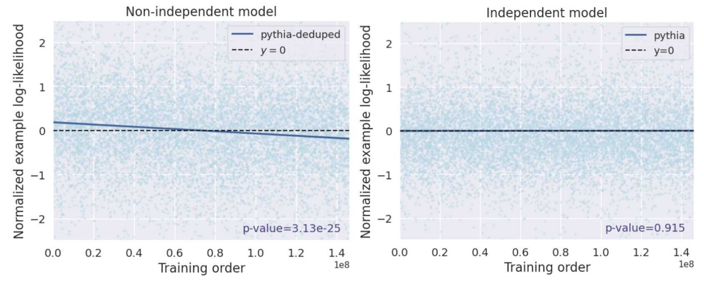

|
Sally Zhu
I'm an undergraduate at Stanford University studying math and computer science.
I do research with the Stanford NLP group and am very fortunate to work with Percy Liang and Rohith Kuditipudi.
I'm broadly interested in language models, reasoning, robustness, and synthetic data. Please reach out if you'd like to chat!
Email /
Scholar /
Twitter /
Github
|
|
Publications
* denotes equal contribution.
|
Independence Tests for Language Models
Sally Zhu*,
Ahmed M. Ahmed*,
Rohith Kuditipudi*,
Percy Liang
International Conference on Machine Learning (ICML), 2025
⭐️ spotlight award
Paper /
Code /
Tweet
|
Blackbox Model Provenance via Palimpsestic Membership Inference
Rohith Kuditipudi*,
Jing Huang*,
Sally Zhu*,
Diyi Yang,
Christopher Potts,
Percy Liang
Neural Information Processing Systems (NeurIPS), 2025
⭐️ spotlight award
Paper /
Code /
Tweet

|
LLM-basics
Implementations of the Transformer architecture, a BPETokenizer, an AdamW optimizer, w/ training scripts, and more (from scratch).
Using this code, we can train a small model for 1.5 hours on an H100 to get a
validation loss of 3.55 on OpenWebText!
(Assignment 1, from CS336)
Code
|
Analyzing Encoder Embeddings for Detecting LLM-generated Text, SemEval 2024
w/ Kevin Li, Kenan Hasanaliyev, George Altshuler, Alden Eberts, Eric Chen, Kate Wang, Emily Xia, Eli Browne, Ian Chen
18th International Workshop on Semantic Evaluation, 2024
Paper
|
|
{kind=link}